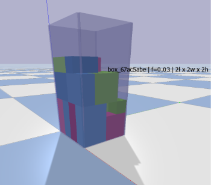

Our system needed to reliably detect multiple objects in the workspace, compute space-efficient packing arrangements respecting stability constraints (>50% support), and execute collision-free trajectories to precisely place objects.
Key requirements included real-time perception, stable grasping, and efficient packing algorithms.